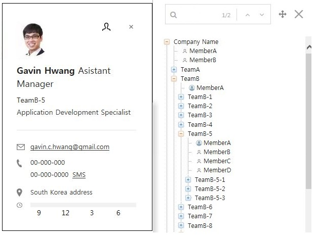
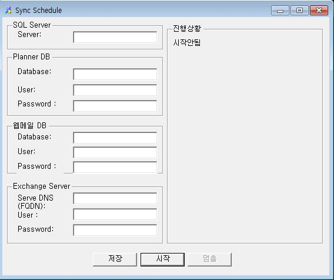
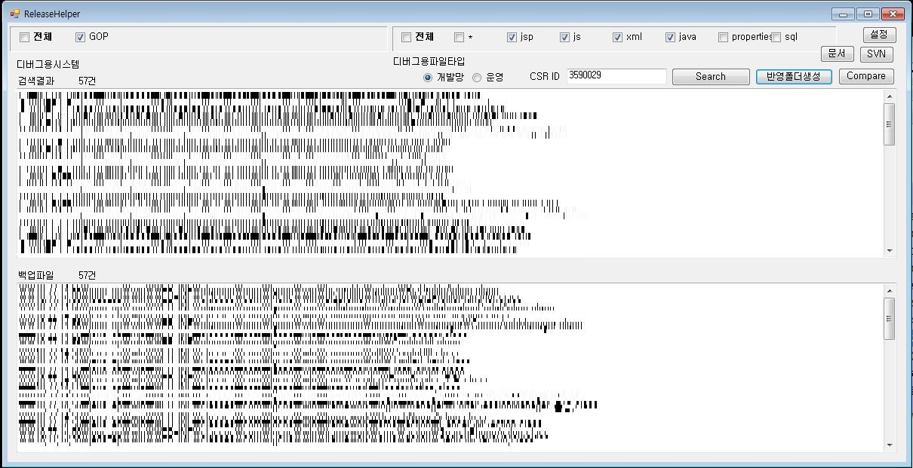
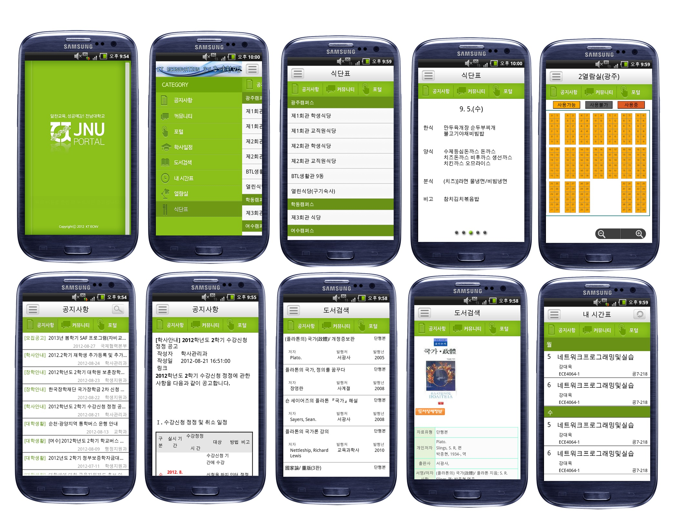
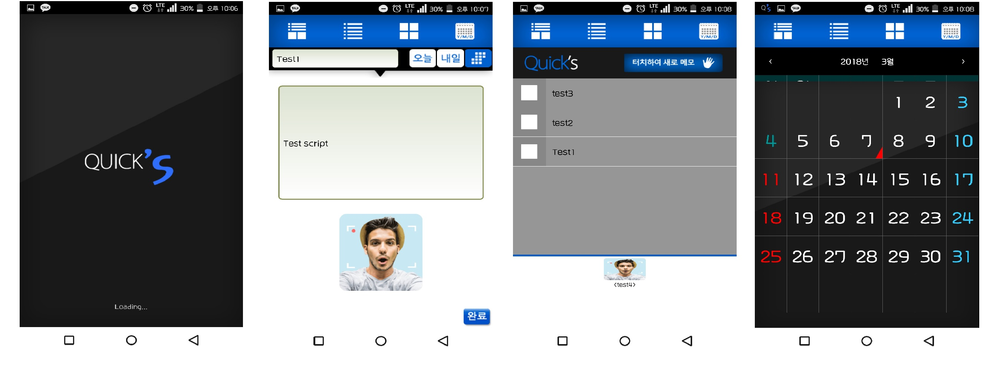

Web Programmer
Busan, South Korea
joel.c.hwang@gmail.com
Skills
Java
C#
Javascript
SQL
Languages
Korean
English
- Skills : C#(Microsoft VSTO), MSSQL
- Skills : Golang(Blockchain code), NodeJS (RestAPI), JQuery, Couch DB(Block Data)
- Skills : docker, Linix Shell Script
- Skills : Java(Servlet), Javascript, MSSQL
- Skills : C#(Aras Innovator), Javascript, MSSQL
- Skills : Couch DB(Block Data), Golang(Blockchain code), NodeJS (RestAPI)
- Skills : Java (Spring Framework), JavaScript (jQuery), SQL(Postgres)
- Skills : Java (Spring Framework), JavaScript (jQuery), SQL(MSSQL)
Online Education System for LG CNS. My role was to solve performance issues.
사내 임직원들을 위한 온라인 교육 시스템 재구축 프로젝트에 참여하였다. 프로젝트 도중 메인 화면의 속도 이슈를 해결하기 위해 참여하였고 리퀘스트 분석중 지연 시간이 많이 발생하는 항목울 분석, 재활용 가능한 데이터 목록을 추출하여 캐쉬화, SQL 조회 쿼리 최적화를 통해 속도를 비약적으로 향상시켰다.- Skills : Java (Spring Framework), JavaScript (jQuery), SQL(MSSQL)
Technical documents sharing system among cowork companies. I was a project manager.
변경된 법에 대해 선대응 하기 위한 프로젝트로 기업간의 공정한 거래를 위한 시스템을 구축하는 프로젝트의 매니저 역할을 맡았다.- Skills : Java (Spring Framework), JavaScript (jQuery), SQL(MSSQL)
Currently managing this system which includes scheduling, room assignments, and the ability to search for client information.
Group ware 시스템을 유지보수하는 업무를 담당하였다. 각 팀들마다 배정된 업무 공간(workspace) 관리, 개인일정관리 및 MS Outlook 동기화, 미팅룸 예약 시스템, 미팅룸 태블릿 시스템 외의 전반적인 업무를 담당하였다.- Skills : Java (Spring Framework),C#(.Net Framework), JavaScript (jQuery), SQL(MSSQL)
1. Developed organization chart by using JStree that is able to search on client side.
2. Developed windows form program for synchronizing between Planner system and MS outlook. If a plan data is changed, the sync program detect that. And send the changed information to MS outlook server.
- Skills : Java(Devon Framework),C#(.Net Compact Framework), SQL(Oracle)
1. Managed system for manufacturing ATMs which includes ability to order parts, confirm quality and quantity, and upload schematics
개발단계의 제품을 관리하는 PLM 유지보수를 담당하였다. 파트 채번, BOM생성, 설계변경 요청, 설계 변경, SAP 인터페이스 등을 담당하였다.
2. PDA
생산에 필요한 바코드 스캔 및 데이터 연동, 블루투스 프린트 바코드 라벨 출력 등을 개발하였다.
- Skills : C#(.Net Compact Framework), Java(Devon Framework) ,SQL(MSSQL)
In charge of PDA program for a postal service solution regarding scanning to confirm each step of the package delivery system as well as providing a signature directly on the PDA
- Skills : Java(Android)
Developed authentication module for use with telecommunication companies in which users can receive a code via SMS and submit via their telecommunication services for verification of identity
- Skills : Javascript, Html, CSS, Web Recognition API
영어 발음 연습을 하기 위해 시작한 프로젝트이다. web speech recognition 모듈을 사용하여 발음을 컴퓨터가 인지하게 하였고
내가 말했던 발음을 녹음하여 다시 들어볼 수 있는 기능을 추가하였다.
- Skills : NodeJS,Javascript,MSSQL
- Skills : Jquery, Web Speech Recognition
- Skills : Javascript
- Skills : Jquery, Web Speech API
- Skills : Java(Spring), Jquery
- Skills : Html, CSS, Jquery
- Skills : C#(.Net Framework)
Windows form based program. Release Helper can find any files by using unique keyword. backup server files.
윈도우 프로그램으로 CI/CD를 사용할 수 없는 Legacy 시스템을 위해 개발하였다. 프로그램 수정을 할 때 어떤 요청으로 수정을 하는지 그 요청 번호를 주석으로 남기는데 변경된 파일만 서버로 반영해야 하기 때문에 휴먼 에러가 발생하기 쉽다. 이를 방지하기 위해 요청 번호로 변경된 프로그램 소스파일을 검색하고 해당 파일에 의해 컴파일된 파일을 찾아 서버와 같은 폴더 스트럭처를 구성해준다. - Skills : Java(Android, EE), SQL(MySQL)
Developed application for university student convenience which includes notice boards, lecture timetables, cafeteria menus, etc.
- Skills : Java(Android), SQL(SQLITE3)
Developed scheduling application including the ability to store memos as well as set and start deadline countdowns
